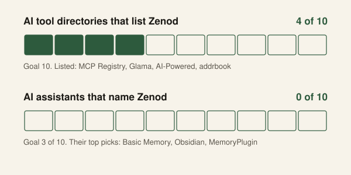

R-S1 · 2026-11-25
Zenod reputation: where it starts
Zenod is listed in 4 of 10 AI tool directories, and 0 of 10 AI assistants name it when asked for a memory tool.

Where Zenod is listed today: 4
Each one opened live on 25 Nov 2026.
| Directory | What is there | Checked | |
|---|---|---|---|
| ✓ | Official MCP Registry | io.github.zenod-ai/zenod 1.0.0, active | 2026-11-25 |
| ✓ | Glama | claimed, quality score A 4 of 5 | 2026-11-25 |
| ✓ | AI-Powered | copied from the registry by itself | 2026-11-25 |
| ✓ | addrbook | copied from the registry, shows the new title | 2026-11-25 |
Next candidates: not listed yet
| Directory | Where it stands | Checked | |
|---|---|---|---|
| ✗ | mcp.so | submitted 7 Nov, still in the queue | 2026-11-25 |
| ✗ | awesome-mcp-servers | entry sent 7 Nov, waits on a maintainer | 2026-11-25 |
| ✗ | Gemini CLI gallery | our extension repo exists, the gallery has not picked it up | 2026-11-25 |
| ✗ | GitHub MCP list | not listed, recheck on 7 Dec | 2026-11-25 |
| ✗ | Docker MCP Catalog | now takes remote servers, row waits to start | 2026-11-25 |
| ✗ | AIBase | takes remote servers only, row waits to start | 2026-11-25 |
| ✗ | mcpservers.org | not listed, has a free submit form | 2026-11-25 |
| ✗ | MCP Market | not listed, its form refuses scripted browsers | 2026-11-25 |
| ✗ | PulseMCP | not listed, new submissions paused | 2026-11-25 |
| ✗ | Anthropic connectors | not listed, review needs a test account | 2026-11-25 |
Smithery stopped taking new servers on 31 Oct. A free list of 3,200 more directories (Mindcase, sent by Jordi on 25 Nov) holds the rest.
Asked 10 assistants: Zenod named 0 times
The same question to each, once, on 25 Nov 2026: What is a good tool to give my AI a memory I own?
| Assistant | Its first pick | Asked | |
|---|---|---|---|
| ✗ | ChatGPT-class, web search on | Obsidian | 18:24 UTC |
| ✗ | ChatGPT-class, no search | Obsidian | 18:24 UTC |
| ✗ | Gemini, web search on | Open WebUI | 18:24 UTC |
| ✗ | Gemini Pro, no search | AnythingLLM | 18:25 UTC |
| ✗ | Claude, web search on | Mem0 | 18:25 UTC |
| ✗ | Claude, no search | Basic Memory | 18:25 UTC |
| ✗ | Perplexity Sonar Pro | MemoryPlugin | 18:25 UTC |
| ✗ | Perplexity Sonar | MemoryPlugin | 18:26 UTC |
| ✗ | Grok, web search on | Basic Memory | 18:26 UTC |
| ✗ | DeepSeek, no search | Basic Memory | 18:27 UTC |
Five ran with web search on, five from what the model already knows. Microsoft Copilot was not reachable without a new account, so DeepSeek took its place.
The answers, word for word
ChatGPT-class, web search on
If by “own” you mean **keep, edit, back up, and take your AI’s memory to another model**, I’d start with **Obsidian and a `memory.md` file**. Obsidian keeps your notes as plain Markdown files on your device, so you don’t need Obsidian—or any particular AI—to read them later. ([obsidian.md](https://obsidian.md/help/Files%2Band%2Bfolders/How%2BObsidian%2Bstores%2Bdata)) Start with three sections: **Preferences**, **Active projects**, and **Decisions worth remembering**. Attach the file when you start a chat that needs it, and ask the AI to propose updates for you to approve. The trade-off: Obsidian stores the memory, but it doesn’t automatically make your AI remember it. - **Want automatic recall in a chat app you control?** Use **self-hosted Open WebUI**. It stores memories in your database, lets you review and edit them, and can let a capable model save and recall them across chats. Pair it with Ollama and local embeddings if you also want the processing to stay on your machine. ([docs.openwebui.com](https://docs.openwebui.com/features/chat-conversations/memory/?utm_source=openai)) - **Building your own AI app?** Look at **Mem0’s open-source edition** for a memory layer you can integrate into your app. ([github.com](https://github.com/mem0ai/mem0)) Which AI are you using now, and do you want it to **save memories automatically** or only remember what you approve?
Sources: https://obsidian.md/help/Files%2Band%2Bfolders/How%2BObsidia, https://docs.openwebui.com/features/chat-conversations/memor, https://github.com/mem0ai/mem0
ChatGPT-class, no search
If you want memory you can **read, edit, back up, and take to another AI**, my default recommendation is **Obsidian with a dedicated memory folder**. Obsidian stores notes as ordinary Markdown files on your device, so the memory survives even if you switch apps. - **For a personal assistant:** Give an AI client that supports local file access or MCP access to just that folder. Start with `preferences.md`, `projects.md`, and `decisions.md`. Let it read freely and ask before saving or changing anything. - **For an agent you’re building:** Look at **self-hosted Letta** if you want the agent to manage its own memory. If you only need to save and retrieve a few facts, **SQLite** is a simpler starting point. One important distinction: **owning the storage isn’t the same as keeping the contents private**. A cloud model can still receive whatever notes your client sends it. If the memories need to stay on your device, use a local model and a local connector too.
Gemini, web search on
To give an AI long-term memory that **you fully own and control**, the best approach depends on whether you are **building an app/agent via code** or looking for an **out-of-the-box chat interface** for personal use. --- ### Option 1: If You Want a Ready-to-Use Chat App (No Coding) If you want a self-hosted ChatGPT alternative that automatically remembers details about you across sessions: * **Open WebUI (Recommended)** * **How it works:** Open WebUI is a self-hosted, open-source interface (often paired with Ollama or private API keys). It includes a built-in **Memory** feature identical to ChatGPT’s: as you chat, it automatically extracts facts about you (or you can manually add/delete memories). * **Ownership:** All memories are stored in your local SQLite or PostgreSQL database on your machine/server. Nothing leaves your hardware unless you route the prompt through an external cloud LLM. * **Khoj** * **How it works:** A personal, open-source AI assistant designed to act as a "second brain." It continuously indexes your local notes (Markdown, Obsidian, Org-mode), PDFs, and chat history. * **Ownership:** Fully self-hostable and local-first. --- ### Option 2: If You Are Building an AI Agent (Frameworks) If you are developing your own agent, chatbot, or assistant, you should use a dedicated **memory layer** that you can back with your own local database: #### 1. **Mem0 (Formerly Embedchain)** — *Best for personalized, multi-layered memory* * **What it does:** Mem0 acts as a persistent memory layer between the user and the LLM. It extracts key facts, preferences, and entity relationships from conversations and intelligently recalls them when relevant. * **Why it fits:** It is open source, supports hierarchical memory (User, Session, and Agent-
Gemini Pro, no search
To give your AI a memory that **you completely own**, you need tools that store your data locally on your machine or on a private server, rather than in the cloud of a big tech company.
In the AI world, "memory" is usually achieved through **RAG (Retrieval-Augmented Generation)**, where your documents, notes, and past chats are stored in a local database that the AI searches before answering you.
Here are the best tools for this, categorized by your technical comfort level:
---
### 1. The Easiest "All-in-One" Desktop Apps (No coding required)
These apps allow you to drag and drop your files (PDFs, Word docs, text) to create a "brain" for your AI. All data stays on your hard drive.
* **AnythingLLM:** This is arguably the best tool for this specific request. It is a desktop app that lets you create "workspaces." You drop your documents into a workspace, and it turns them into a memory bank.
* *Why it’s great:* You can connect it to cloud AIs (like ChatGPT or Claude) OR local AIs (like Ollama) for 100% privacy. Your documents never leave your computer.
* **GPT4All:** A free, open-source desktop application that lets you run AI models locally. It has a built-in "LocalDocs" feature. You point it to a folder on your computer, and the AI will read and remember those files when you chat with it.
* **ChatRTX (by Nvidia):** If you have a Windows PC with a modern Nvidia RTX graphics card, this is a powerful, free app. It lets you connect a local AI directly to your personal files and photos, processing everything lightning-fast on your own GPU.
### 2. For Note-Takers & Writers (Personal Knowledge Management)
If your "memory" consists of your personal notes, journals, or research, you should use a local-first note-taking app paired with an AI plugin.
* **Obsidian + "Smart Connections" Plugin:** Obsidian is a wildly popular note-taking app where allClaude, web search on
The best pick depends on what you're building. Most of the tools below are open source and self-hostable, so you keep the data. **Mem0** is the easiest to start with. - It's the most popular agent-memory project on GitHub by a wide margin (~63.0K stars), so it has plenty of examples and community help. - You can start with the library, move to a self-hosted server, or use the hosted platform. - One caveat: the smoothest production path is its hosted platform, and at scale most deployments move to an external vector database. **Cognee** suits you if you want a knowledge graph and strict privacy. - It uses embedded-by-default storage (SQLite, LanceDB, Kuzu), so a local start has no mandatory cloud. - It supports 100% local deployment, including local LLMs via Ollama. - It's more than you need if you only want to remember preferences. **Letta** (formerly MemGPT) is a full agent runtime with memory built in. If you already have an agent and just want to add memory, it's heavier than you need. **Supermemory** is the lightest option. It's a personal memory layer with a simple REST API and Docker-based self-hosting, under an MIT license. It has no graph support and no MCP support. **MemOS** is worth a look if you use OpenClaw or Hermes Agent. Its local plugin is 100% on-device, with persistent SQLite and hybrid search. **Graphiti** is the open-source engine behind Zep, and it's good at tracking how facts change over time. Zep retired its self-hosted Community Edition, but Graphiti itself stays open source. **Things to check:** - Many of these "best of" roundups are written by the vendors they rank first. One source says most "best open-source memory" roundups are published by one of the vendors and rank that vendor first. Treat the rankings with skepticism. - "Open source" doesn't always mean fully self-hosted. Some tools still expect you to run an external vector database or pay at the tier you need in production. - Some memory platforms send telemetry by default. Telemetry is enabled by default in many memory platforms. If you want full ownership, turn it off and check the network traffic. - Memory only stays yours if the LLM calls and embeddings are also local, for example through Ollama. Otherwise your memories still go to a third-party API. **My suggestion:** - For a quick start, use Mem0 or Supermemory. - For maximum privacy and relationships between facts, use Cognee with a local model. - For a personal assistant with plain files you can read and edit, look at the Markdown-based options such as EverOS or ReMe. What are you giving memory to (Claude, ChatGPT, a local model, a custom agent)? Do you want to code against it or use it as a ready-made app? With that I can narrow it to one option.
Sources: https://hindsight.vectorize.io/blog/2026/08/11/open-source-a, https://hindsight.vectorize.io/blog/2026/08/11/open-source-a, https://hindsight.vectorize.io/blog/2026/08/11/open-source-a, https://hindsight.vectorize.io/blog/2026/08/11/open-source-a, https://opensourceaireview.com/blog/private-ai-agent-memory-, https://hindsight.vectorize.io/blog/2026/08/11/open-source-a, https://vilix.ai/blog/best-open-source-ai-memory-tools, https://vilix.ai/blog/best-open-source-ai-memory-tools
Claude, no search
It depends on how you use your AI, but here are the strongest options where **you control the data**: ## If you use Claude Desktop, Cursor, or another MCP-compatible app **Basic Memory** is a top pick for ownership. - Stores memories as plain **Markdown files on your computer** - You can read, edit, back up, or version them with Git - Works well alongside Obsidian - If you stop using it, your notes are still just text files **Official MCP Memory Server** (from the Model Context Protocol project) - A simple knowledge graph saved to a local JSON file - Easy to set up, but more basic ## If you're building your own AI app or agent **Mem0** - Open-source memory layer you can self-host - Automatically extracts and recalls facts about users - Works with most LLMs (OpenAI, Anthropic, local models) **Letta** (formerly MemGPT) - Full agent framework with long-term memory built in - Self-hostable, with memory stored in your own database **Zep / Graphiti** - Builds a knowledge graph that tracks how facts change over time - Graphiti is the open-source core ## If you want maximum control (DIY) Store embeddings in a database you run yourself, such as **Chroma**, **Qdrant**, **SQLite with sqlite-vec**, or **Postgres with pgvector**, and retrieve relevant memories before each prompt. ## For a fully local setup Pair any of the above with a local model via **Ollama** or **LM Studio**, so nothing leaves your machine. --- **Quick recommendation:** - **Non-developer using Claude Desktop or similar:** Basic Memory - **Developer building an app:** Mem0 - **Building complex autonomous agents:** Letta What's your setup? Tell me which AI tool you use and whether you code, and I can give you specific setup steps.
Perplexity Sonar Pro
If you want a tool that gives your AI a **memory you own**, the strongest fit in these results is **MemoryPlugin** if you want one memory layer across multiple AI tools, or **Membase** if you want a shared memory for your own app plus assistants and coding tools.[1][3] A practical way to choose: - **MemoryPlugin**: best if your goal is a **cross-tool personal memory** that follows you across many AI apps and runs as a browser extension/MCP integration.[1] - **Membase**: best if you want **one shared memory** for consumer assistants and your own agents/coding tools, with hosted and local options.[3] - **Mem0**: best if you are building a **personalized agent** and want a common starting point for memory layers.[3][10] - **Zep / Graphiti**: better if your AI needs facts that **change over time** or you want graph-structured memory.[3][13] - **Qdrant / Weaviate / Pinecone**: better if you are a developer and want to build your own memory stack with a vector database or hybrid retrieval layer.[10] If you mean a **personal assistant that remembers you**, not just a developer tool, the results also point to **Claude** and **ChatGPT** as strong general assistants with built-in memory, while **Littlebird** is highlighted for memory built from your work rather than just your chats.[9][12] If you want, I can narrow this to: - **best no-code option** - **best open-source option** - **best for ChatGPT/Claude memory** - **best for your own app or agent**
Sources: https://blog.memoryplugin.com/best-ai-memory-tools/, https://dazzle.ai/ai-memory-apps/, https://membase.com/blog/best-ai-agent-memory-tools-2026, https://ailately.com/articles/best-ai-memory-tools, https://alignify.co/tools/memory, https://www.aixploria.com/en/category/memory-en/, https://www.techtimes.com/articles/331314/20261123/best-ai-m, https://www.braintrust.dev/articles/best-ai-agent-memory-too
Perplexity Sonar
If you want **memory you control and can carry across AI tools**, a strong choice is **MemoryPlugin**: it’s built for “carrying one memory across multiple AI tools” and runs as a browser extension with MCP support across 21+ AI tools.[1] If you want a more **developer-friendly, shared memory layer** for your own app or agents, **Membase** is a good fit: it is described as “one memory shared across your app, AI assistants and coding tools,” with support for both hosted and local modes.[3] For a **personal AI memory** that remembers more of your work context rather than just chats, **Littlebird** is a standout option because it reads your active window and meeting transcripts so the memory is built from your work.[9] A simple way to choose: - **MemoryPlugin** — best if you want one memory to follow you across many AI products.[1] - **Membase** — best if you are building with your own app/agent and want a shared memory layer you own.[3] - **Littlebird** — best if you want memory captured from your work activity, not just chat history.[9] If you want, I can narrow this down to the best option for **privacy**, **self-hosting**, or **no-code use**.
Sources: https://blog.memoryplugin.com/best-ai-memory-tools/, https://dazzle.ai/ai-memory-apps/, https://membase.com/blog/best-ai-agent-memory-tools-2026, https://ailately.com/articles/best-ai-memory-tools, https://alignify.co/tools/memory, https://www.aixploria.com/en/category/memory-en/, https://www.techtimes.com/articles/331314/20261123/best-ai-m, https://www.braintrust.dev/articles/best-ai-agent-memory-too
Grok, web search on
A good default is **Basic Memory**: local Markdown files you own, shared across AI tools through MCP. It stores what your AI remembers as plain Markdown on your disk. Claude, Cursor, Codex, VS Code, and other MCP clients can read and write the same notes. You can open them in any editor or Obsidian, put them in git, and back them up like any other files. Under the hood it builds a small knowledge graph and supports semantic search, but the files stay the source of truth. It is open source (AGPL-3.0) and free to run locally. [[1]](https://github.com/basicmachines-co/basic-memory/blob/main/README.md) [[2]](https://github.com/basicmachines-co/basic-memory/tree/093dab5f03cf7b090a9f4003c55507859bf355b0) ### Other strong “I own it” options | Goal | Tool | Why it fits | | --- | --- | --- | | See and undo every change the AI makes | **OpenMyMemo** | Memory is a folder of Markdown you own. Apps share it; additions are reviewable and undoable. Apache-2.0, no account required for local use. Newer and smaller than Basic Memory. [[3]](https://openmymemo.com/) [[4]](https://github.com/mymemoai/openmymemo) | | Simplest possible local memory | **Official MCP knowledge-graph memory server** | One local file, a few tools (`create_entities`, `search_nodes`, etc.). Zero extra stack. | | Memory layer inside an app you are building | **Mem0 (self-hosted)** | Most widely used open-source memory layer (Apache-2.0). Run the library or the Docker server; data lives in your Postgres/vector store. Extraction still calls an LLM you configure. Some advanced features (graph memory, decay) are platform-only. [[5]](https://docs.mem0.ai/open-source/overview) [[6]](https://docs.mem0.ai/platform/platform-vs-oss) | | Facts that change over time | **Graphiti** | Open-source temporal knowledge graph (the engine behind Zep). Self-host with FalkorDB or Neo4j. [[7]](https://hindsight.vectorize.io/blog/2026/08/11/open-source-agent-memory-systems) | | Fully local agent memory with little ops | **Hindsight** or **Cognee** | Both are open source and self-hostable; Hindsight is a simple Docker deploy, Cognee is stronger if you want a knowledge graph over documents and chat. [[7]](https://hindsight.vectorize.io/blog/2026/08/11/open-source-agent-memory-systems) [[8]](https://www.cognee.ai/best-open-source-ai-memory-tools-for-llm-agents-and-developers) | ### How to choose - **Personal use across the AIs you already chat with:** start with **Basic Memory**. If you care most about auditing and rolling back what the model writes, try **OpenMyMemo**. - **Product or agent you ship:** self-host **Mem0**, or **Graphiti** if “what was true last month” matters. - **Avoid** treating ChatGPT Memory, Claude memory, or a hosted memory API as “yours.” Those stores live with the vendor. Export is not the same as ownership. One limit worth knowing: local storage means *you* hold the memory, but anything the model retrieves is still sent to that model’s provider in the prompt. Ownership of the store does not make the inference path private unless you also run a local model.
Sources: https://github.com/basicmachines-co/basic-memory/blob/main/R, https://github.com/basicmachines-co/basic-memory/tree/093dab, https://openmymemo.com/, https://github.com/mymemoai/openmymemo, https://docs.mem0.ai/open-source/overview, https://docs.mem0.ai/platform/platform-vs-oss, https://hindsight.vectorize.io/blog/2026/08/11/open-source-a, https://www.cognee.ai/best-open-source-ai-memory-tools-for-l
DeepSeek, no search
If you want memory **you own**—stored locally or in your own database, exportable, not locked inside ChatGPT/Claude—the best pick depends on how you use the AI. **Short answer:** - **Using Claude Desktop / Cursor / an MCP-capable AI?** → **Basic Memory** or **Mem0 OpenMemory**. - **Building your own AI app/agent?** → **Mem0** or **Letta**. - **Want an all-in-one local personal AI over your notes/docs?** → **Khoj** or **AnythingLLM**. - **Want maximum control/DIY?** → **SQLite + sqlite-vec / pgvector / Qdrant + embeddings**. | Tool | Best for | Ownership model | |---|---|---| | **Basic Memory** | MCP clients like Claude Desktop; memory as plain Markdown files | Local Markdown files, Git-friendly, very ownable | | **Mem0 / OpenMemory** | Adding long-term memory to AI agents/apps | Open-source, self-hostable; use your own Postgres/Qdrant/etc. | | **Letta (formerly MemGPT)** | Stateful agents with editable memory blocks + archival memory | Self-hosted, DB-backed, open-source | | **Zep / Graphiti** | Temporal knowledge-graph memory for agents | Community edition can be self-hosted | | **Khoj** | Personal AI over your notes, docs, email | Self-hostable, indexes your own files | | **AnythingLLM** | Local ChatGPT-like app with workspaces/RAG | Local-first, works with local models/vector DB | | **Open WebUI** | Self-hosted AI chat with RAG/memory features | Local/self-hosted | | **Chroma, Qdrant, LanceDB, pgvector, sqlite-vec** | DIY memory store for embeddings | You run and own the database | **My practical recommendation:** - If you just want a memory for your Claude/Cursor/etc. assistant: try **Basic Memory** first. It’s simple, MCP-based, and stores everything in Markdown you can read, edit, back up, and sync. - If you’re building an app: use **Mem0** with **pgvector** or **Qdrant**. It handles add/search/update/delete memory and can be self-hosted. - If you want an agent that actively manages its own memory: use **Letta**. - If you want a local personal AI over your documents: use **Khoj** or **AnythingLLM**. **Ownership checklist:** - Stored in open formats: Markdown, SQLite, Postgres, JSON. - Runs locally or on your server. - Export/import supported. - Backups are possible. - No vendor lock-in. - You can delete/forget specific memories. Avoid relying only on built-in ChatGPT/Claude memory if ownership matters. Export is limited and the memory lives in their system. Instead, put memory in your own layer and plug it into the AI via MCP, API, or RAG.
All answers as data. The 10 calls cost 37 cents through the team's OpenRouter key.
What this means
Both numbers are starting points. Every later step on this objective is measured against them. The assistants already recommend tools that keep memory as Markdown files you own, which is what Zenod does. They do not know Zenod yet.
R-S1 keeps this page · one shared page shell (E75-S5)